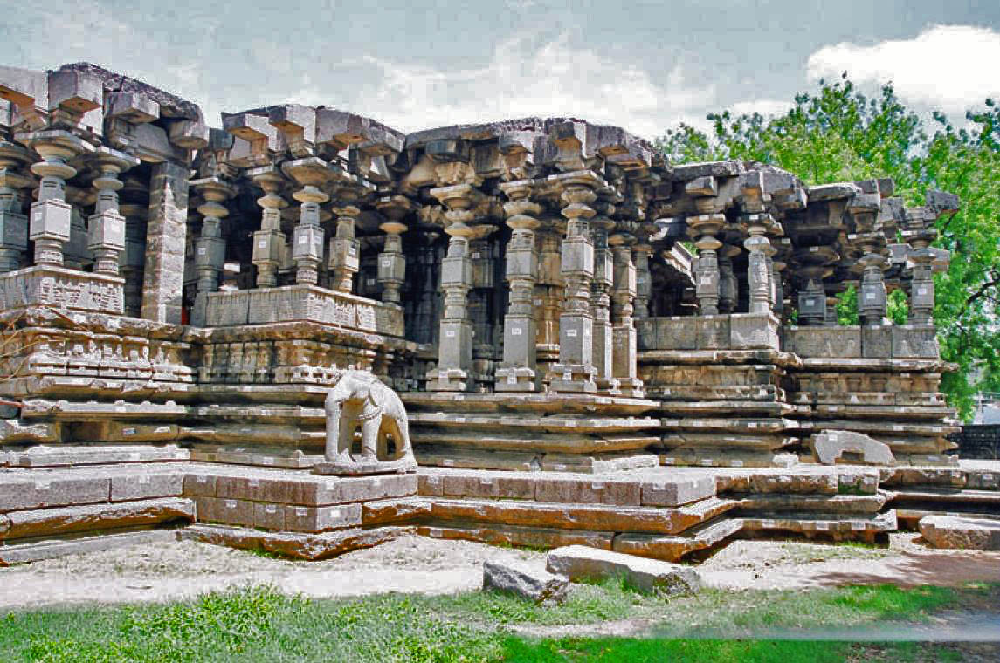
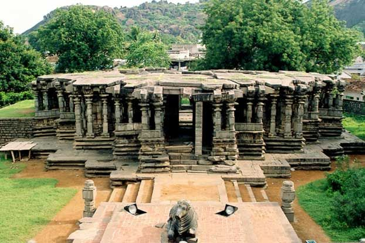
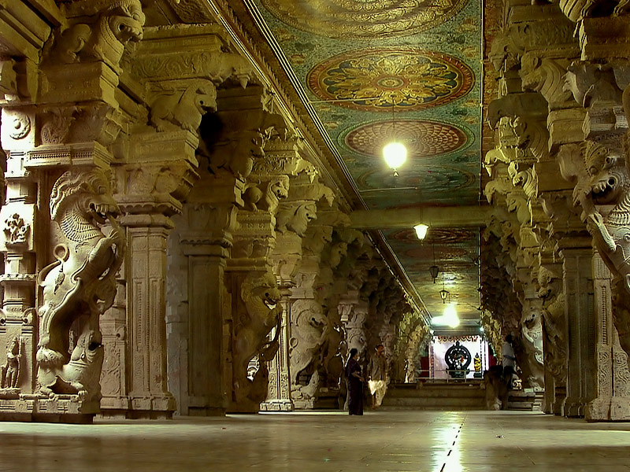

|  |  | |
 |
|---|
The Thousand pillars temple which is located in Hanamkonda is one of the most important parts of the Warangal City. The temple was constructed in the 1163 AD by the great Rudra Deva. Every part of the temple depicts the typical Chalukya style of architecture. The Thousand Pillar temple has three presiding deities, Lord Vishnu, Shiva and Surya Deva. The temple stands as a statement of the finest of arts of the Kakatiyas.
Visiting the Thousand Pillar Temple is a must if you want to learn more about the richness of our country. Thousand Pillar Temple is a very popular pilgrimage center, in Warangal and thousands of devotees of all faiths come here to pay their homage and get a glimpse of this wonderful construction.
The temple has a star shaped architecture, which stands as a testimony to the expertise of the wonderful craftsmen of the glorious period. The amazing temple is supported by the pillars that are richly carved. You can find a huge monolith Nandi, made up of black basalt stone.
Thousand Pillars temple is located in the heart of Warangal city and is easily accessible through road.
All days of the week : 10:00 am – 7:00 pm